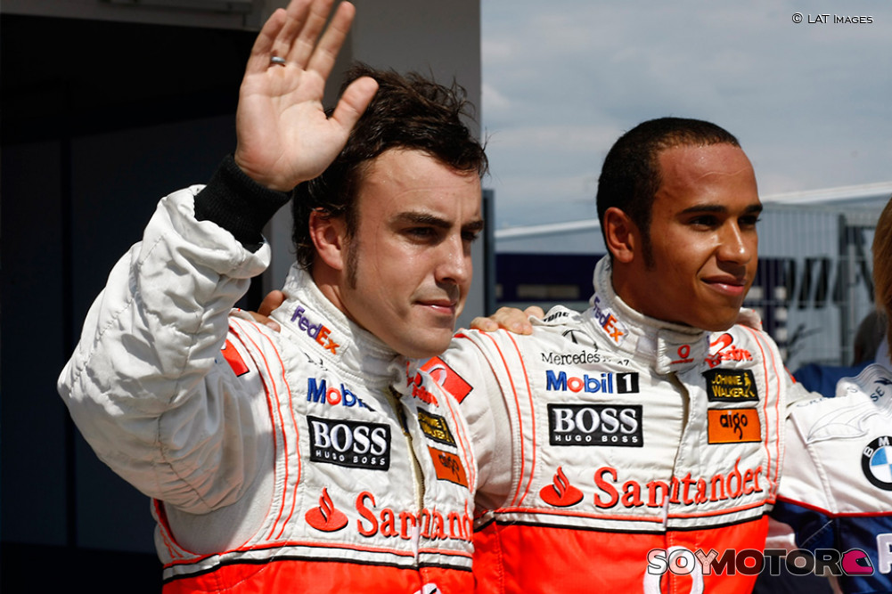
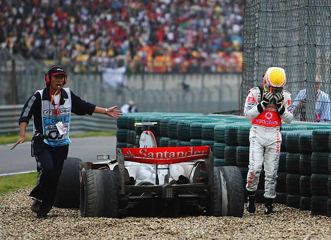

FAN PAGE LEWIS HAMILTON
McLaren - Temporada '07
"Debut con Subcampeonato"
El 24 de noviembre de 2006, salta la noticia de que Hamilton será fichado por el equipo McLaren para 2007.
Fernando Alonso sería su compañero y Pedro Martínez de la Rosa el piloto de desarrollo. En su debut en el Gran Premio de Australia,
lograría un meritorio tercer puesto, por detrás de Kimi Räikkönen y Fernando Alonso, siendo el primer piloto en llegar al podio en su debut
desde que Jacques Villeneuve lo hiciera en el Gran Premio de Australia de 1996.
En las dos siguientes carreras finaliza segundo, siendo el primer piloto de la historia en conseguir tres podios consecutivos tras su debut.
En el Gran Premio de España, en Montmeló, finaliza quedando en segunda posición y se aúpa al primer puesto del mundial.

Gran Premio de Canadá
En el Gran Premio de Canadá, Hamilton logró su primera pole position, impresionando nuevamente al mundo de la F1. El 10 de junio, obtiene
su primera victoria en Fórmula 1 en el Circuito Gilles Villeneuve, saliendo desde la pole. Al mismo tiempo, se coloca nuevamente como único líder
del campeonato, al frente de su compañero de equipo, Fernando Alonso.
En el Gran Premio de los Estados Unidos la rivalidad entre los dos pilotos de McLaren se vio acentuada, ya que Lewis Hamilton, logrando la pole,
resultó ganador tras una constante lucha con Alonso. En la prueba siguiente, en Francia obtendría su octavo podio consecutivo, sin embargo, en el Gran
Premio de Gran Bretaña, a pesar de partir desde la pole, finalizó tercero, tras Kimi Räikkönen y Fernando Alonso.
Gran Premio de Hungría
El Gran Premio de Hungría se vería marcado por una polémica decisión de los comisarios, que afectaría a los tiempos de Fernando Alonso de la escudería McLaren.
En la tercera ronda de clasificación, Hamilton, que no pudo realizar una vuelta más que Alonso conforme a acuerdos internos del equipo en el Gran Premio anterior, no cedió la posición a su compañero.
En el último pit stop de la Q3, a Fernando Alonso le pusieron neumáticos duros y usados, en vez de blandos y nuevos. Fernando pidió explicaciones a sus ingenieros, a lo que estos respondieron que los
neumáticos no estaban preparados causando un retraso de 10 segundos en la maniobra, impidiendo a Lewis llegar a tiempo para realizar una última vuelta. Tras visionar los videos de la maniobra y ver una extraña
comunicación entre Alonso y su ingeniero para ralentizar la operación, los comisarios decidieron retrasar al español cinco posiciones en la parrilla, quien había firmado la pole, heredándola Lewis. Y aunque días
más tarde el propio Hamilton se disculpó con Alonso por no haberle dejado pasar durante la tercera sesión de calificación tal y como se había acordado, la aparición ante la prensa ese mismo día de Alonso comiendo fue
considerada una falta de respeto y el comienzo de acciones internas del piloto español para perjudicar a su propio equipo.
Gran Premio de Turquía
Durante el Gran Premio de Turquía, Lewis Hamilton sufrió un reventón en su neumático derecho delantero mientras marchaba tercero. Tras el reventón sufrió una salida de pista, aunque consiguió retornar a ella para llegar
a la calle de boxes y cambiar ruedas. Logró finalizar quinto la carrera, mientras que su compañero de equipo Fernando Alonso aprovechó esta situación y acabó tercero la carrera, recortando de esta manera 2 puntos al piloto inglés en el Campeonato Mundial.
Gran Premio de China
La carrera comenzó con la pista húmeda, lloviendo poco después de la salida. Fernando Alonso, quien salía cuarto,
adelantó a Felipe Massa en las primeras curvas, pero el brasileño pudo recuperar su tercera posición poco después. Los dos primeros,
Lewis Hamilton y Kimi Räikkönen, se alejaban de Massa y Alonso a medida que pasaban las vueltas, viéndose el asturiano incapaz de adelantar al Ferrari del brasileño.
En la primera parada en boxes, los cuatro pilotos de cabeza no cambiaron de neumático, manteniendo el neumático intermedio, que en aquel momento se encontraba bastante degradado.
Esto fue la causa del abandono de Lewis Hamilton, cuyo neumático trasero derecho se gastó, y al entrar en boxes para cambiarlo, se salió de la curva de entrada al pit-lane y acabó en una trampa de puzolana,
de la cual no pudo retirar el coche.
Hamilton se salió en la entrada a boxes y se quedó atascado en la puzolana, teniendo que abandonar la carrera cuando estaba en disposición de proclamarse campeón mundial.
Tras el retiro de Hamilton, Räikkönen y Alonso entraron a su último repostaje. El finlandés salió a diez segundos de Alonso, quien logró salir por delante de Massa. En aquel momento, Robert Kubica,
quien había hecho una sola parada y lideraba en aquel momento la carrera por delante de Räikkönen, tuvo un fallo hidráulico y se vio obligado a abandonar, cediendo la primera posición al piloto de Ferrari,
quien mantuvo la primera posición hasta el final de la carrera.
El resultado final de la carrera dejaba a Lewis Hamilton, líder del mundial, con 107 puntos, a cuatro de Fernando Alonso (103 puntos) y siete de Kimi Räikkönen (100 puntos). Así, a falta de una carrera para el final de la temporada,
tres pilotos tenían aún posibilidad de lograr el título mundial, algo que no ocurría desde la temporada 1986.

Gran Premio de Brasil
En el Gran Premio de Brasil empezó la carrera en segunda posición, pero ya en las primeras curvas fue adelantado por Kimi Räikkönen y Fernando Alonso. Después de una salida de pista en la primera vuelta y de un fallo en su monoplaza, llegó a descender hasta la decimoctava posición,
perdiendo así el liderato del mundial en la última carrera del campeonato en favor de Räikkönen, quien se coronaría campeón de temporada 2007.
Tras la carrera, se abrió una investigación de la FIA en los monoplazas de los equipos BMW Sauber y Williams-Toyota, por una presunta anomalía en la temperatura del carburante. La posible descalificación de los pilotos de ambos equipos habría aupado a Hamilton hasta la cuarta posición, otorgándole así el campeonato.
Sin embargo, los comisarios decidieron finalmente no sancionar a las escuderías, lo que dejó a Hamilton en la séptima posición.Tras hacerse pública la decisión, la escudería McLaren-Mercedes anunció que apelaría. Sin embargo, el 16 de diciembre la FIA decidió que Räikkönen mantendría el título, al desestimarse el recurso de la escudería anglogermana.
En enero de 2008, Lewis renueva con el equipo hasta 2012.